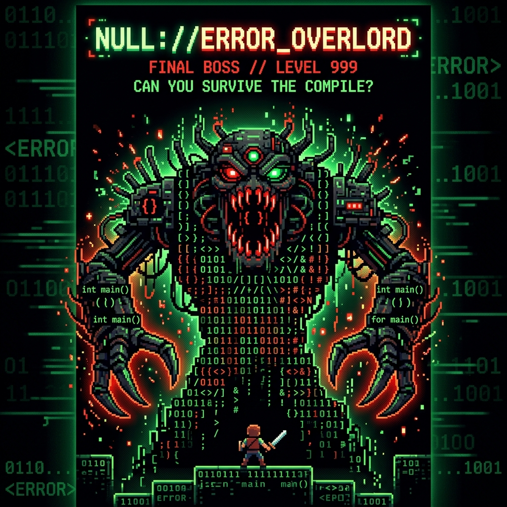

Cette année, le BUT Informatique est un jeu de survie en mode Hardcore.
Évitez les malus d'absence, survivez aux labyrinthes d'algorithmique,
esquivez les pièges en Bash et HTML/CSS, farmez vos bases PostgreSQL et SQL,
et battez le Boss final en C++ avec Qt et SageMath !
Avant le Game Over, faites une pause dans la matrice.
BUT INFO:
SURVIVAL EDITION
WARNING: LOW HP
